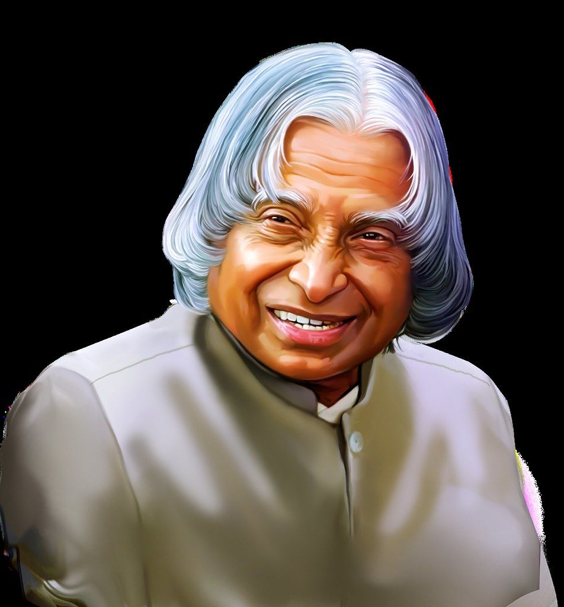

About A.P.J. Abdul Kalam
A P J Abdul Kalam the "Missile Man of India" was born on October 15, 1931 in Rameswaram, Tamil Nadu.
He served as the 11th President of India and was reowned scientist, known for his work in India's
space missile programs.